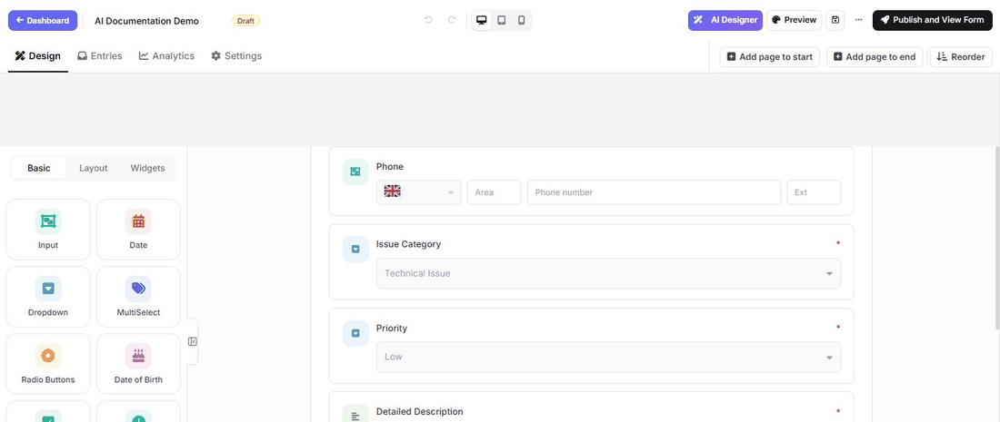

Design a form with AI on Umbraco
AI Designer turns a plain-language request into live changes on the form currently open in the builder. Review the result on the canvas, then save the draft only when it matches the request.
Use Create a form with AI when the form does not exist yet. Use AI Designer for the form currently open in the builder.
The animation below was recorded in the real Umbraco builder. It starts with the published form, shows AI Designer applying the requested changes on the canvas, and ends on the live form with the new Company Name field, new description, and Send Feedback button visible. It uses an English prompt for consistency, but you can write the request in any language supported by the configured AI model. Use the language you want for generated field labels and form text, or name the desired output language explicitly.

Before you begin
An administrator must configure an AI provider under MegaForm → Settings → AI Settings. Trial or package restrictions may also control whether AI features are available.
Create a useful prompt
Open a form in the builder, select AI Designer, and describe:
- the form's purpose and intended audience;
- the information that must be collected;
- which fields are required;
- any sections or multiple pages;
- conditional questions;
- the desired tone and visual style;
- what should happen after submission.
Example used in the animation:
Add a required Company Name field directly below Full Name, change the submit button text to "Send Feedback", and change the description to "Your feedback helps us improve every customer experience." Keep the title AI Success Demo and preserve the existing fields.
Review and save the result
Check the changed field labels, keys, required flags, option lists, and conditional rules on the live canvas. Remove anything unnecessary and confirm that the form does not request personal or sensitive data without a business need.
Use the normal builder for any precise follow-up changes, then select Save draft or Publish and View Form. The published page at the end of the animation is the final verification that the AI changes were saved and rendered for visitors. AI output is a starting point, not a substitute for validation and visitor testing.
Database-assisted design
The Database tab can help plan a form around an approved data source. Ask a site administrator to configure the named connection first. Do not paste connection strings, passwords, personal data, or production records into an AI prompt.
Final checks
Preview the form, test all required and conditional fields, submit sample data, and verify the resulting entry and workflow before publishing.
For more prompt structure and the new-form flow, see Create a form with AI.